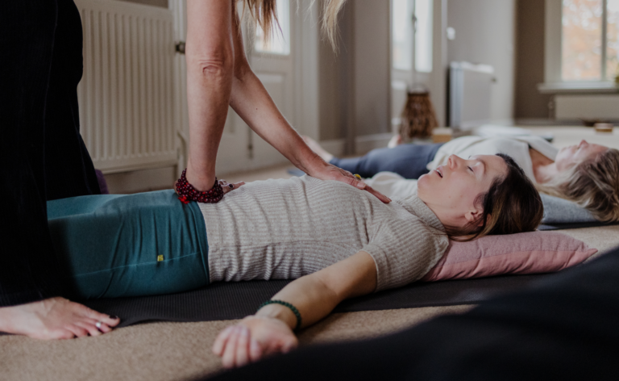

Persoonlijke training
Individuele yoga – persoonlijke training, afgestemd op jouw behoefte, welzijn, wensen en belangstelling.
Steeds vaker laat wetenschappelijk onderzoek zien dat yoga, yogatherapie en ademcoaching effectief zijn en bijdragen aan de verbetering van gezondheid, innerlijke rust en balans.
In 1:1 lessen begeleid en ondersteun ik jou in alle veiligheid, om te kunnen onderzoeken en ervaren.
Therapeutische Yoga is ondersteunend en werkt zeer helend voor mensen met: Rug-nek-schouderklachten, depressie, burnout, angststoornis, tinnitus, artritus, artrose, migraine, slaapproblemen, overgangsklachten, pijn in het lichaam en bij ademhalingsproblemen waardoor je klachten ervaart zoals hoofdpijn, verharde kaakspieren, nek- schouderklachten, druk/pijn op de borst, benauwd hebben.
“Geestelijke gezondheidsproblemen zoals depressie, angst, stress en slapeloosheid behoren tot de meest voorkomende redenen voor mensen om behandeling te zoeken met complementaire therapieën zoals yoga. Yoga moedigt iemand aan om te ontspannen, de ademhaling te vertragen en zich te concentreren op het heden, waarbij de balans verschuift van het sympathische zenuwstelsel en de vlucht-of-vechtreactie naar het parasympathische systeem en de ontspanningsreactie. Dit laatste is kalmerend en herstellend; Het verlaagt de ademhaling en hartslag, verlaagt de bloeddruk, verlaagt de cortisolspiegel en verhoogt de bloedtoevoer naar de darmen en vitale organen.”
Somatisch werken met yoga (yin yoga en restorative yoga) meditatie, mindfulness en ontspanningsoefeningen.
Samen met jou werk ik op een diepere laag in het lichaam. O.a in het bindweefsel (fascia), daar waar blokkades, blessures, fysieke en emotionele pijn zich vaak ophopen en vast zetten wat bewegingsbeperkingen veroorzaakt. Zoals verdriet dat je niet hebt gevoeld, vast zit in je borst, je longen. Boosheid die je hebt wegstopt in je kaken en schouders zit. Je ademhaling blokkeert als je je angst niet durft te voelen. En patronen uit je verleden opgeslagen liggen in je zenuwstelsel.
Als daar ruimte wordt gecreëerd en het aandacht krijgt om mentaal en fysiek te ontladen, dan ga je je weer lichter, vitaler en vrijer voelen in lichaam en geest.

Bij het volgen van individuele yoga is het mogelijk om vooraf een vrijblijvend telefonisch kennismakingsgesprek aan te vragen. Tijdens dit gesprek kijken we naar wat JIJ mentaal en fysiek nodig hebt en wat jij wil veranderen, aan wilt werken, versterken, los wil laten of accepteren.
Individuele yoga geeft jou stimulans en motivatie om thuis verder aan de slag gaan met de oefeningen. Een verandering gebeurt namelijk niet zonder contact te maken met het lichaam en er doorheen te bewegen. Het doen van de oefeningen is het proces, en dat vraagt tijd, geduld en compassie.
TSY is een bewezen effectieve yoga methode voor mensen met PTSS. De methodiek is ontwikkeld in Amerika bij het Trauma Center in Brookline, Massachusetts. TSY is een vriendelijke vorm van yoga, stap voor stap opgebouwd en mindful.
Het gaat om een psychisch of fysiek trauma te kunnen verwerken door weer in contact te komen met jezelf – vooral met je lichaam- en leren opnieuw een positieve relatie met je lichaam op te bouwen. Belangrijke thema’s zijn: het huidige moment ervaren, bewustzijn van de ademhaling, keuzes maken, gevoel terug te geven om eigen acties te ondernemen en je eigen ritme creëren.
1:1 bied ik hiervoor privésessies aan in een veilige en rustige omgeving, toegesneden op jouw specifieke behoeften. TSY is in principe een aanvulling op, ter ondersteuning van reguliere therapie.
Individuele yoga/adem- en ontspanningstherapie (zie ook stressreductie trajecten) kan ingezet worden bij een re-integratie- of ziektewet traject vanuit het UWV, Arbodienst, wet Poortwachter.
Heb je vragen of wil je weten wat de mogelijkheden en kosten zijn, neem dan gerust contact met me op.
| Samen | Individuele yoga is ook mogelijk voor 2 personen samen. |
|---|---|
| Serie lessen | Een serie van minimaal 5 -8 lessen is aan te raden voor je eigen herstelproces fysiek, mentaal en emotioneel. |
Indien je een afspraak moet afzeggen of verzetten, dan verzoek ik je dit minimaal 24 uur van tevoren door te geven. Afspraken die binnen 24 uur voor de geplande tijd worden afgezegd, zullen volledig in rekening worden gebracht.
Bij iedere les of sessie is het mijn doel om mensen een gevoel van ’thuis komen’ te geven. Heb je een vraag of wil je een afspraak maken? Neem gerust contact met mij op.